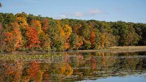

Michigan Park Reviews
Discover the best parks in Michigan. Read reviews, and plan your next adventure.
Discover the best parks in Michigan. Read reviews, and plan your next adventure.
A beautiful park with scenic views and recreational facilities.
Grand Haven State Park, Michigan: A picturesque blend of sandy beaches, Lake Michigan vistas, and the iconic red lighthouse.

Hayes State Park in Michigan captivates with its serene lakeside ambiance, well-maintained trails, and family-friendly amenities, providing a delightful escape into nature.
Highland State Park, Michigan: Tranquil lakes, scenic trails, and natural beauty converge in this serene outdoor haven.
Kensington State Park, Michigan: A perfect blend of scenic trails, Kent Lake views, and vibrant outdoor energy awaits in this picturesque natural escape.
Maybury State Park, Michigan: A tranquil haven near Detroit, Maybury offers peaceful trails, flourishing greenery, and a rejuvenating escape into nature.
Pinckney State Park, Michigan: Nature enthusiasts rejoice in Pinckney's extensive trails, chain of lakes, and diverse wildlife, creating an idyllic setting for outdoor exploration.

Van Buren State Park, Michigan: Sandy shores, majestic dunes, and the soothing sounds of Lake Michigan make this park a coastal haven for beachgoers and nature lovers alike.
Waterloo State Park, Michigan: A haven for outdoor enthusiasts, Waterloo delights with vibrant wildflowers along extensive trails, serene lakes, and a peaceful ambiance for nature enthusiasts.
Bald Mountain State Park, Michigan: Rugged trails, lakeside tranquility, and diverse landscapes make this park a paradise for hikers and nature lovers seeking outdoor adventure.